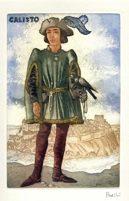

- 


Celestina: Una vieja alcahueta, con muchísimos oficios; desde prostituta hasta hechicera. Celestina es una mujer sabia y lista, sabe lo que necesita y cómo obtenerlo. Su mejor interés era el dinero, la codicia y avaricia. Esta hace lo que tenga que hacer por su propio bien y se aprovecha de su inteligencia para esto. Técnicamente, la obra gira a su entorno, sin ella nada hubiera sido posible.
Calisto: Este representa a un loco enamorado, no le importan los demás, a penas el mismo. Lo único que busca es el amor de Melibea y por eso, este es fácil de engañar y se aprovechan de él. Antes de conocer a Melibea, Calisto simplemente pensaba que podía obtener cualquier cosa por sus riquezas, por su estatus, por eso le paga a Celestina, que sin que él lo supiera, lo traería a la muerte.
Melibea: Esta es una mujer de nobleza, culta y de honor. Esta es de algunos 20 años, pero soltera y virgen. Ya era tiempo de casarse, pero esta no tiene interés, ni conocía a ningún hombre. Esto cambia una vez conoce a Calisto, no por primera vez claro, pero una vez cae bajo el hechizo, esta queda completamente enamorada. Su pensar cambia y una vez Calisto muere, ella decide morir también. Con el progreso de la obra, este personaje cambia; de una joven ingenua y sin interés, pasa a una loca de amor.
Sempronio y Pármeno: Ambos son criados de Calisto, éstos no son amantes de su amo, por tal razón Sempronio es el primero en dejarlo a un lado por su propio interés y por eso llama a Celestina. Por otro lado, Pármeno le tiene un poco más de gusto, este sabía que Celestina era una vieja hechicera y que lo único que traía era mal. Aún así le da la espalda a Calisto, igual que Sempronio. Estos preferían las riquezas, ambos interesados en su parte de la recompensa. Pármeno no solo ganaría parte del dinero, sino que, Celestina le entrega una mujer hermosa, Areúsa. Por otro lado, ya Sempronio tenía su propia amante, Elicia, prostituta de Celestina.
Personajes restantes:
Pleberio y Alisa: Padres de Melibea.
Sosia y Tristán: Segundo par de criados de Calisto, reemplazan a Sempronio y Pármeno luego de sus muertes. Estos presencian la muerte de Calisto.
Areúsa y Elicia: Prostitutas de la Celestina, está las usa para convencer a los criados de Calisto, Sempronio y Pármeno.
Lucrecia: Criada principal de Melibea, estas parecen llevarse bien, incluso Lucrecia aconseja a Melibea.